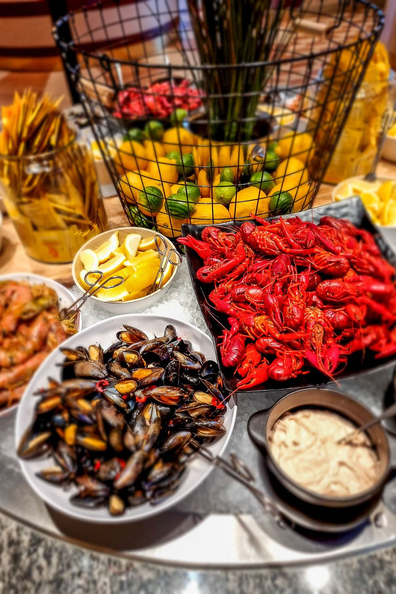

Laivan kannella on hetki, jolloin ihminen kohtaa mikrotaloustieteen alastomimman totuuden: lautasella oleva kuudes nakki ei maksa mitään.
En ole tämän alan kokemusasiantuntija. Kävin Tallinnassa ensimmäisen kerran vasta 2019, koska elin pitkään siinä uskossa, että se on yhä Neuvostoliitto. Varsinaisen sivistykseni seisovan pöydän äärellä sain Ruotsin-laivalla, missä vanhempani vetivät katkarapuähkyn sellaisella vakaumuksella, että muistan sen yhä. Pöytä oli runsas, lautaset pieniä ja vanhempieni katse kirkas. Siellä opin, että buffet on paikka, jossa tavallinen ihminen tekee taloustieteellisiä päätöksiä nopeammin kuin osaa ne perustella.
Suvussani on kuitenkin yksi henkilö, joka on kehittänyt tämän taidon teoriaksi. Serkkuni on sukumme soveltavan mikrotalouden edelläkävijä. Hänellä on buffetista oppi, jonka hän esittää joka kerta samalla tyyneydellä: kun hän käy seisovassa pöydässä, ravintola jää tappiolle.
Kohtelen tätä väitettä sillä kunnioituksella, jonka se ansaitsee. Se on selkeä, se on rohkea ja se on lausuttu ääneen, mikä on enemmän kuin useimmat taloustieteilijät uskaltavat tehdä ennusteilleen. Tarkastellaan sitä siis vakavasti.
Syöjän ongelma
Kun pääsymaksu on maksettu, se on uponnut kustannus. Mennyttä rahaa ei syömällä saa takaisin, koska se on jo ravintolan tilillä. Tästä huolimatta jokainen meistä on joskus kuullut itsensä sanovan: nyt syön rahani takaisin. Lause on uponneen kustannuksen harhan harjoittamista omalla haimalla.
Talousteoria antaa silti syöjälle selkeän ohjeen. Koska seuraavan annoksen rajakustannus on nolla, kannattaa syödä siihen pisteeseen, jossa viimeisen suupalan rajahyöty putoaa nollaan. Taloustiede kutsuu sitä optimaaliseksi ratkaisuksi. Lääketiede käyttää toista sanaa. Rationaalinen buffetvieras pysähtyy täsmälleen siihen, missä nautinto ja pahoinvointi kohtaavat, ja hyvä syöjä osuu siihen tarkasti.
Lautanen tuo mukanaan oman pulmansa, joka tunnetaan reppuongelmana. Tilavuus on rajallinen ja jokaisella ruoalla on oma arvo-tilavuussuhteensa. Leipä on tässä laskelmassa surkea sijoitus, ja juuri siksi ravintola asettaa sen pöydän alkupäähän. Aloittelija lastaa leipää ja häviää pelin ennen pääruokaa. Serkkuni ei koske leipään. Hän aloittaa katkaravuista. Tämä on kurinalaisuutta, jota on vaikea olla ihailematta.
Ketä vastaan voitto tulee
Sitten tulee kysymys, jonka serkkuni iskulause sivuuttaa. Ketä vastaan hän oikeastaan voittaa?
Buffetin hinta on asetettu keskimääräisen kulutuksen mukaan. Kun syöjiä on satoja, suurten lukujen laki tekee työnsä: yksittäiset katkarapuhamstraajat ja yksittäiset potunsyöjät keskiarvoistuvat, ja ravintola tietää melko tarkasti, mitä ilta maksaa. Tehokas syöjä ei tässä joukossa kaada koko bisnestä. Hän siirtää varallisuutta niiltä, jotka söivät vähän itselleen. Teinityttö, joka otti salaattia ja yhden soijapullan, maksoi osan serkkuni katkaravuista.
Serkkuni siis voittaa. Hän vain voittaa väärän vastustajan. Ravintolan omistaja hymyilee kassalla, ja kevyt syöjä maksaa laskun.
Ravintola tietää tämän ja suojautuu. All-you-can-eat houkuttelee luokseen raskaan hännän, ja se on haitallista valikoitumista risteliyaluksen mittakaavassa. Bisnes vastaa kitkalla: pienet lautaset, sopivan kaukana sijaitseva katkarapupiste, halvat hiilihydraatit etualalla ja kunnon kate juomissa. Voitto ei synny ruoasta vaan janosta.
Se yksi kerta, kun teoria toteutui
On kuitenkin yksi tilaisuus, jossa serkkuni iskulause toteutui kirjaimellisesti. Ne olivat minun hääni.
Tarjoilun mitoitus laskettiin huolellisesti, normaalin keskimääräisen kulutuksen mukaan. Voileipäkakkua tilattiin sen verran kuin tavanomainen vierasjoukko syö. Laskelma oli moitteeton yhtä yksityiskohtaa lukuun ottamatta. Se unohti, että samasta suvunhaarasta saapuisi toistakymmentä hyväruokaista vierasta, serkkuni heidän joukossaan.
Tässä piilee koko juju. Häät ovat pieni, keskenään korreloitunut otos. Suurten lukujen laki tarvitsee paljon vieraita tasoittaakseen ääripäät, ja sadan hengen juhlassa sitä turvaa ei ole. Toteutunut otos oli itsessään se raskas häntä ja se häntä oli vielä korreloitunut.
Silloin harmitti. Kakun määrä oli laskettu juhliin ja se loppui ennen kuin osa vieraista ehti pöytään. Myöhemmin asia on naurattanut useammin kuin osaan laskea.
Opetus
Buffet kestää raskaan syöjän, koska suurten lukujen laki kantaa sen. Häät kaatuvat samaan syöjään, koska siellä ei ole tarpeeksi suuria numeroita. Sama ihminen on vaaraton Cinderellalla mutta tuhoisa sukujuhlassa.
Jos siis joskus haluaa nähdä ravintolan jäävän tappiolle, risteily on väärä paikka. Oikea paikka on yksityistilaisuus, jonka asiakasprofiilia kukaan ei muistanut mallintaa oikein. Ja jos sellaista juhlaa sattuu suunnittelemaan, kannattaa laskea vieraat nimeltä ja merkitä erikseen ne, jotka tulevat suvun siitä haarasta, jolla on teoria – ja varata heille oma kakku.